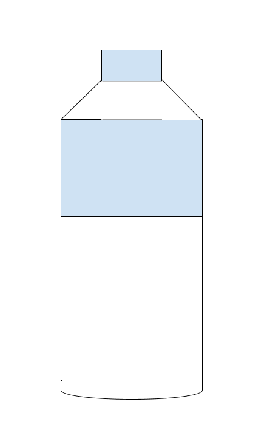
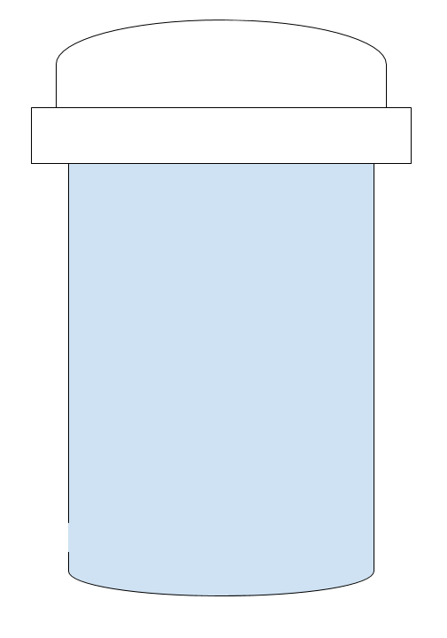

Given the vast amount of contaminants that can be found in tap water, there is a high demand for products that decrease our exposure to these contaminants. Therefore, the water industry in the United States is always evolving to provide people with as much “clean” water as possible. Currently, two of the most popular solutions are water filters and water bottles.
Water Bottles

With convincing advertisements, the water bottle industry makes it very easy for many to feel a false sense of security. Every year, more and more people are purchasing water bottles, making the industry grow 39% within a spam of four years.
However, more than half of all bottled water comes from tap water, making it as safe as the water coming out of the sink. In addition, bottled water doesn't have many regulations, as it is only regulated by the FDA. To learn more about the FDA, click here!
Using water bottles regularly can also heavily affect your wallet. A water bottle can cost you anywhere from $0.89 dollars to $8.26. However, tap water can cost you fractions of a penny. This can make bottled water 2,000 times more expensive than tap water!
Water Filters
Water filters can successfully remove a lot of contaminants from your tap water and improve its taste. Their prices can range from 20 to 900 dollars. There are many different kinds of filters that you can purchase:
- Pour-through filters: Inexpensive pitchers that are easy to use. However, they can only filter a certain amount of water at a time.
- Faucet-mounted filter: Screwed directly on the faucet and require minimal installation. However, it can’t be installed on all faucets
- Plumbed-in-filter: Installed directly into the existing water pipe. They are best for filtering large amounts of water.
When purchasing water filters, you have to be very careful to not buy a counterfeit filter. They can have misleading designs, illegally use brand names, logos, and product labels. These counterfeit filters can not only damage your health but also your refrigerator and kitchen.